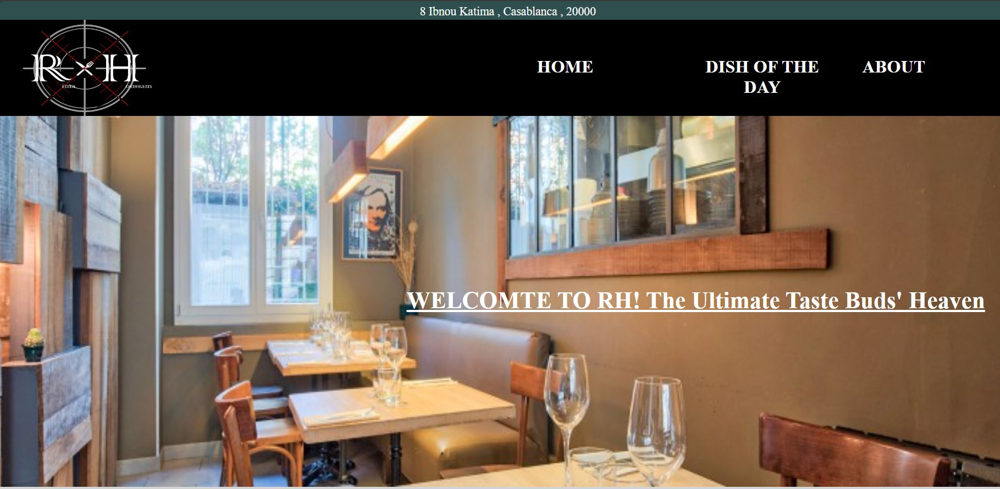
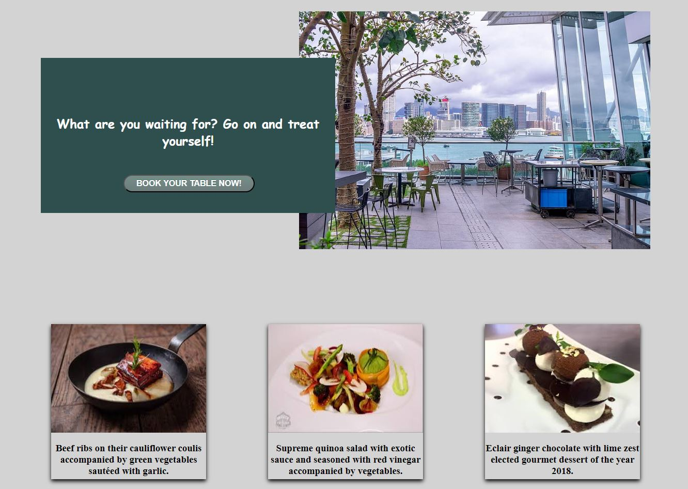
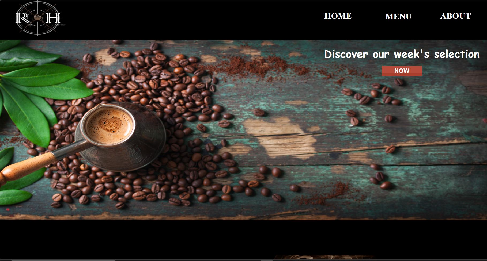
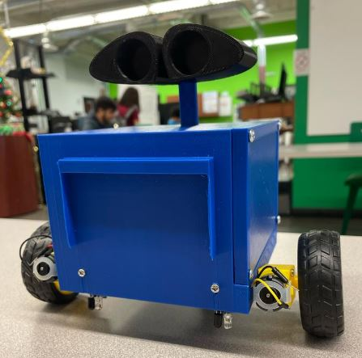
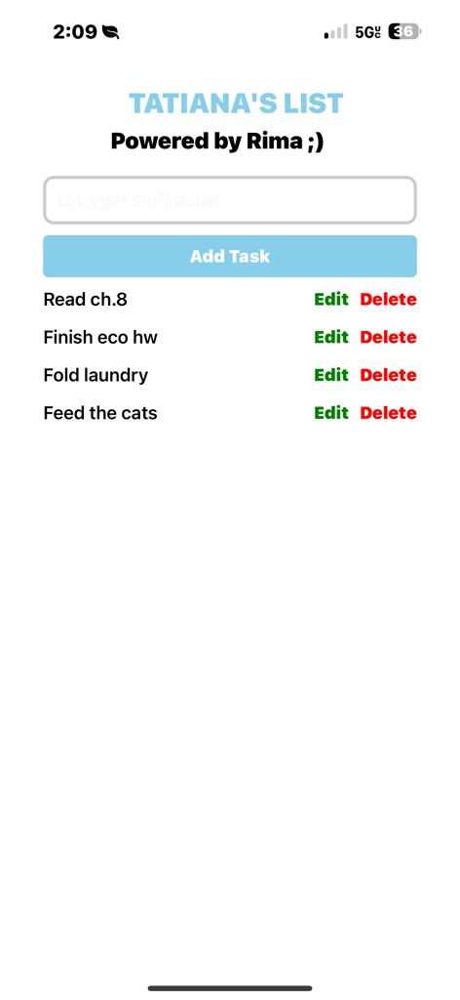

During my senior year of high school, I participated in the CanYouWeb competition, where I embarked on my first humble professional project. The challenge was to create websites for a restaurant and a coffee shop, utilizing my basic knowledge of HTML, CSS, and Java. Eager to apply what I had learned in my coding journey, I crafted visually appealing and user-friendly interfaces for both the restaurant and coffee shop. Incorporating my understanding of HTML for structuring, CSS for styling, and Java for interactive elements, with my partner, we successfully developed functional websites that showcased my budding skills. This project not only marked a significant milestone in my coding endeavors but also ignited my passion for web development. Feel free to take a look at the Restaurant website and the Coffeeshop website

In my second robotics project, undertaken in a Foundations of Engineering lab, I had the exciting opportunity to create a line-following robot that bore a striking resemblance to Wall-E. This project was a perfect blend of software and hardware work, requiring a comprehensive understanding of both disciplines. Leveraging Arduino materials, my team and I delved into the world of C++ programming to code the intricate functionalities of the robot. The task involved not only manipulating physical components but also implementing complex algorithms to enable the robot to autonomously follow a designated path. The end result was a harmonious integration of engineering principles and coding prowess, culminating in a charming robot capable of navigating its surroundings with precision.

After acquiring the fundamental skills in app development through a workshop with a school organization, I embarked on my first comprehensive app development project. The inspiration behind this endeavor stemmed from observing one of my closest friends, Tatiana, struggling with productivity. Leveraging my newfound knowledge in React.js, I decided to create a personalized app tailored to address Tatiana's organizational challenges. The app not only served as a practical tool for task management but also incorporated elements of gamification to make the process more engaging and motivating for her. This project not only honed my development skills but also showcased the transformative power of technology in addressing real-life challenges among friends.